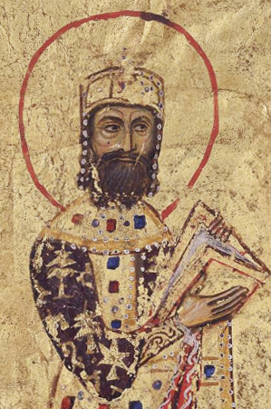

Alexios I Komnenos (Greek: Ἀλέξιος Κομνηνός, 1057 – 15 August 1118; Latinized Alexius I Comnenus) was Byzantine emperor from 1081 to 1118. Although he was not the first emperor of the Komnenian dynasty, it was during his reign that the Komnenos family came to full power and initiated a hereditary succession to the throne. Inheriting a collapsing empire and faced with constant warfare during his reign against both the Seljuq Turks in Asia Minor and the Normans in the western Balkans, Alexios was able to curb the Byzantine decline and begin the military, financial, and territorial recovery known as the Komnenian restoration. His appeals to Western Europe for help against the Turks were also the catalyst that contributed to the convoking of the Crusades.
return to Komnenian Dynasty